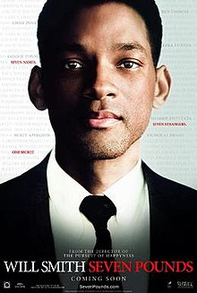

Seven Pounds is a 2008 American drama film, directed by Gabriele Muccino, in which Will Smith stars as qa man who sets out to change the lives of seven people. Rosario Dawson, Woody Harrelson, and Barry Pepper also star. The film was released in theaters in the United States and Canada on December 19, 2008, by Columbia Pictures. Despite receiving negative reviews, it was a box-office success, grossing US$168,168,201 worldwide.
